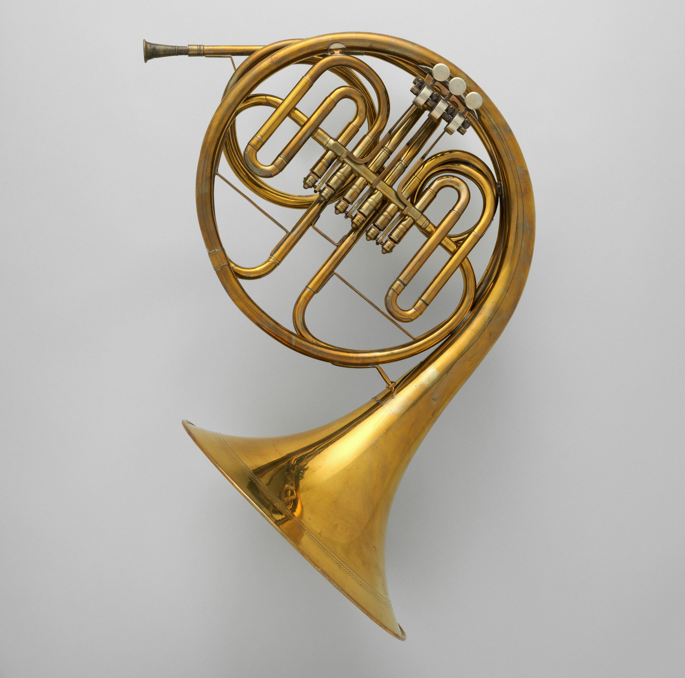
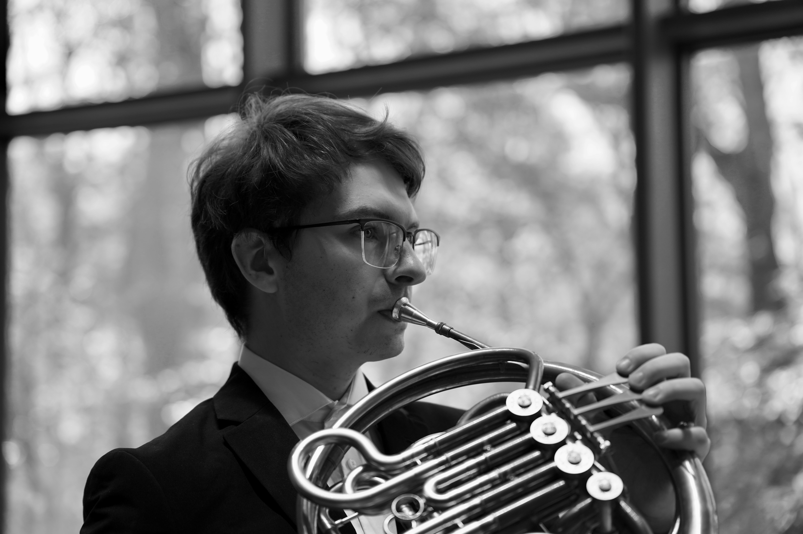

Description:
The French horn is a brass instrument known for its warm, rich, and mellow sound. It is commonly used in orchestras, concert bands, brass ensembles, and film music. The main parts of a French horn include the mouthpiece, leadpipe, rotary valves, valve levers, tuning slides, long coiled tubing, and the large flared bell. Its circular shape and wide bell make it easy to recognize among other brass instruments.

How to Play the French Horn:
The French horn is played by buzzing the lips into the mouthpiece while blowing air through the instrument. The player presses valve levers to redirect air through different lengths of tubing, which changes the notes. Notes can also be changed by adjusting lip tension and airflow. The player usually places the right hand inside the bell, which helps control the tone and can slightly affect the pitch.
